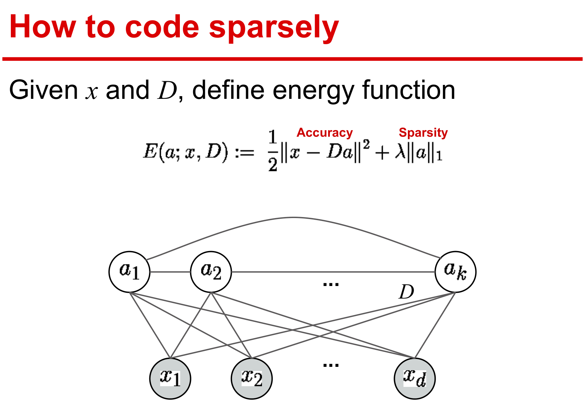
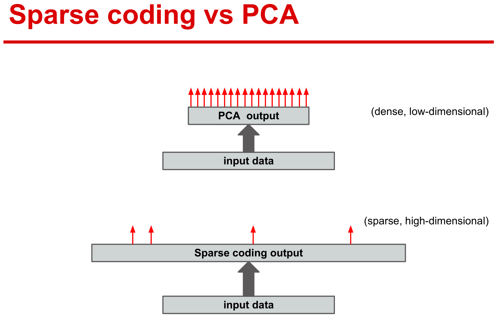
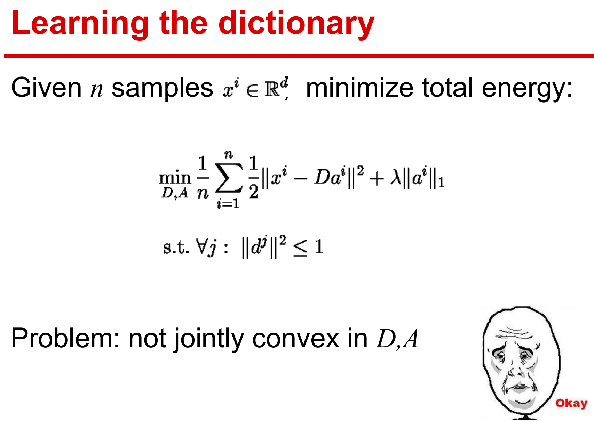
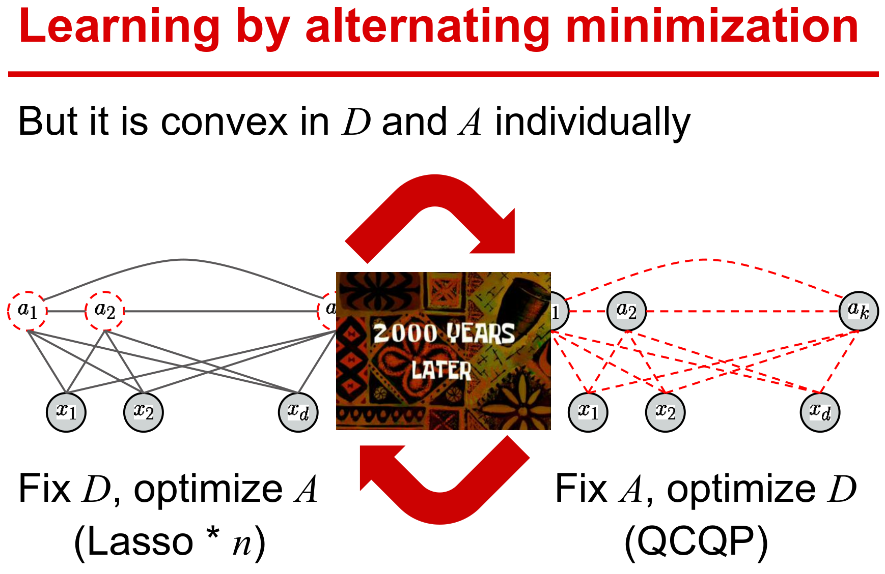
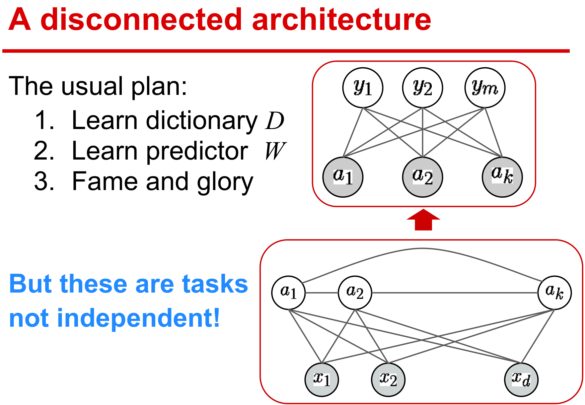
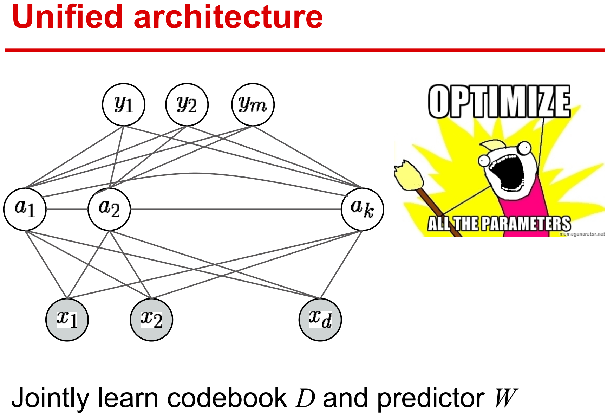
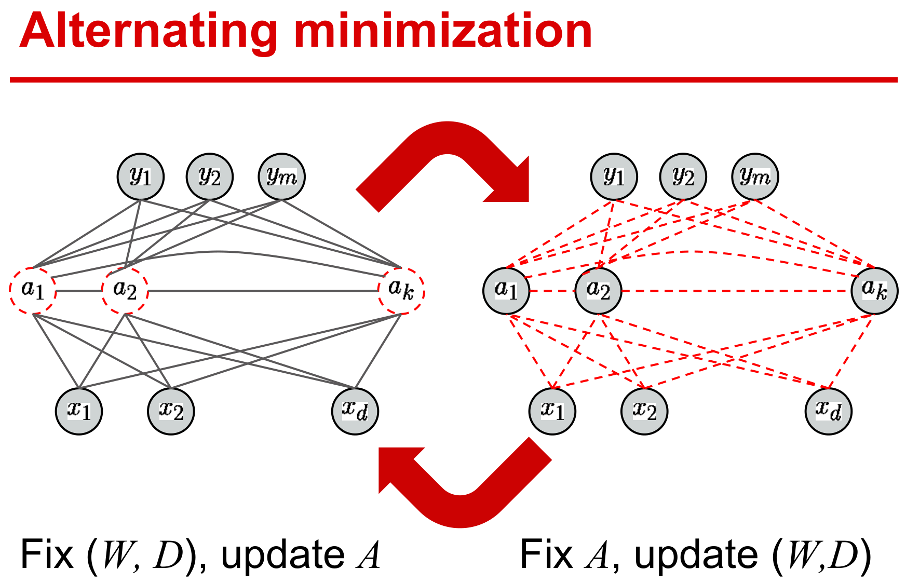
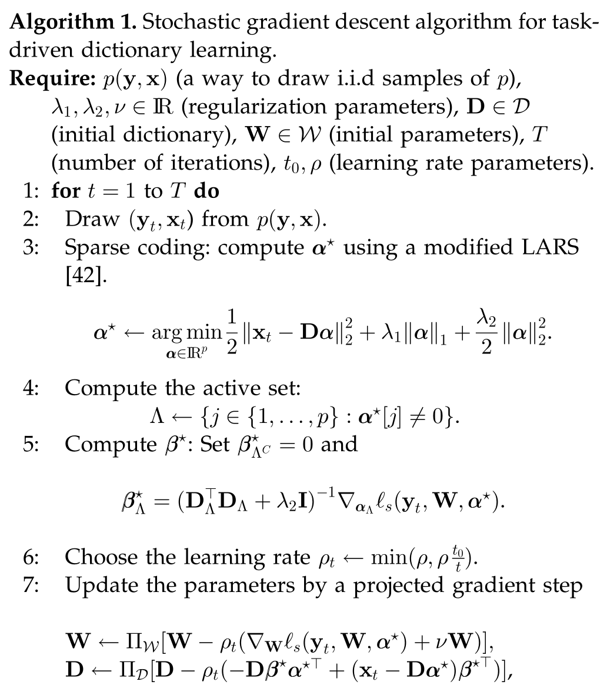
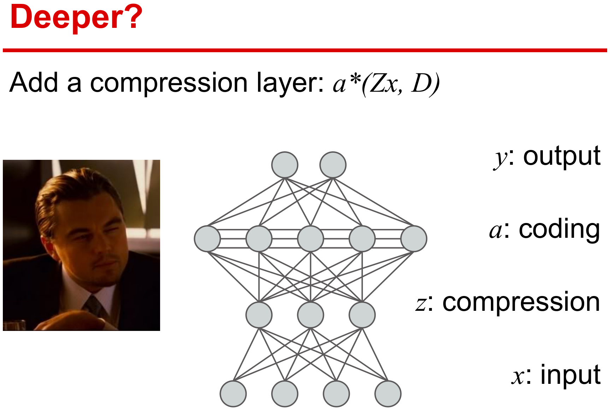

写在前面
介绍一篇基于任务驱动下的字典学习，本文还参照了一个挺有意思的slide。
数据驱动字典学习
数据驱动字典学习强调的是数据自适应性，其目标是获取观测信号的字典实现最佳逼近的稀疏编码表示。假设训练集为X=[x1,…,xn]，经验损失函数为
gn(D)≜n1i=1∑nℓu(x,D)
其下标ℓu表示无监督学习方式(unsupervised)。ℓu(x,D)作为稀疏编码问题的最优值，可选用如下的elastic-net形式：
ℓu(x,D)≜α∈Rpmin21∥x−Dα∥22+λ1∥α∥1+2λ2∥α∥22
当λ2=0，ℓu(x,D)导出ℓ1稀疏分解问题，见基追踪(basis pursuit)、Lasso等相关论文。
为避免字典原子出现ℓ2范式任意大的问题，通常限制字典如下约束
D≜{D∈Rm×ps.t.∀j∈{1,…,p},∥dj∥2≤1}
经验损失到期望损失：
Ex[ℓu(x,D)]=a.s.n→∞limgn(D)
稀疏表示
稀疏表示是采用基函数对原始数据进行编码，可以简单地理解为线性表示。

稀疏表示则采用冗余的基函数，而主成分分析采用正交基来重构数据，所以主成分分析的系数并非稀疏。

字典学习
字典学习需要同时求解字典和稀疏编码，优化对两个变量而言是非凸的。

但是对单个变量是凸的，所以采用交替迭代的方式进行变量更新。

监督学习方式
基本形式
记elastic-net的稀疏解为
α⋆(x,D)≜α∈Rpargmin21∥x−Dα∥22+λ1∥α∥1+2λ2∥α∥22
下面使用稀疏向量α⋆(x,D)作为信号x的特征来估计对应的标签y，一般都是最小化期望风险
W∈Wminf(W)+2ν∥W∥F2
其中W是需要学习的模型参数。凸函数f定义如下：
f(W)≜Ey,x[ℓs(y,W,α⋆(x,D))]
与ℓu不同，在给定模型参数W和α⋆(x,D)稀疏特征下，ℓs度量了预测标签与真实标签的接近程度，所以ℓs是以监督学习(supervised)的方式选择不同的损失函数，例如二次函数、logistic函数或hinge函数等。注意，到目前为止，所用的字典都是无监督学习ℓu(x,D)最优化得到的，但用来重构的字典D并不适用于监督学习任务，这就有了如下监督学习的方式
D∈D,W∈Wminf(D,W)+2ν∥W∥F2
其中f(D,W)则需要同时学习参数W和字典D。
f(D,W)≜Ey,x[ℓs(y,W,α⋆(x,D))]
- 引入字典变量D后，α⋆的不可微分不利于优化问题的求解。
- 常规做法是引入稀疏正则化的光滑近似项。
监督与非监督的区别在于字典的过完备性：
- 非监督是衡量预测样本与真实样本的误差，需要冗余的稀疏表示
- 监督则衡量预测标签与真实标签的差异，仅需要获取具有鉴别的特征，严格的过完备不再需要。
传统的监督学习先获取数据表示，再挖掘特征，这是一种典型的多步骤式的机器学习方式，每一步最优的并不代表整体工程最优。

目前方法都期望设计端到端的学习方式，在统一的结构下学习有效参数，保证整体性能最优。

基本假设
- (y,x)服从概率密度函数p，其紧支撑集KY×KX⊆Y×X。
- 当Y为有限维实向量空间的子集时，p为连续且ℓs二次连续可微。
- 当Y为有限的标签集合时，p(y,⋅)为连续且ℓs(y,⋅)二次连续可微。
输入数据的线性变换
在监督学习基本形式上，考虑增加一个线性变换Z得到如下模型
D∈D,W∈W,Z∈Zminf(D,W,Z)+2ν1∥W∥F2+2ν2∥Z∥F2
其中f(D,W,Z)则需要同时学习参数W、字典D和线性变换Z。
f(D,W,Z)≜Ey,x[ℓs(y,W,α⋆(Zx,D))]
该线性变换Z具有如下作用：
- 通过线性变换可降低特征空间的维度
- 通过增加模型的参数使得模型表现能力更强
半监督学习
稀疏编码技术可有效地从无标签数据中学习到好的特征，因此下面给出一个监督和无监督相结合的半监督模型。
D∈D,W∈Wmin(1−μ)Ey,x[ℓs(y,W,α⋆(x,D))]+μEx[ℓu(x,D)]+2ν∥W∥F2
任务驱动字典学习
下面将前面的基本优化模型应用至多种任务上，例如回归、分类、压缩感知。分类可视为回归的特殊形式，即在向量空间中选择有限的离散数据作为标签。大多分类算法也都是集中研究二分类算法，多分类可通过多个二分类器组合实现。注意，下面介绍的应用中，ℓs的只需要满足前面提到的二次可微即可。
回归
在回归任务中，目标函数的ℓs通常选择为平方损失函数，这在贝叶斯估计中也可解释去除高斯噪声的残差项，因此回归也可视为一种去噪或恢复的过程。
D∈D,W∈WminEy,x[21∥y−Wα⋆(x,D)∥22]+2ν∥W∥F2
当然，ℓs也可使用其他的二次可微损失函数来衡量y与Wα⋆(x,D)的差异性。
二分类
设置标签集为Y={−1;+1}，ℓs使用logistic回归损失函数来表示标签y与特征α⋆(x,D)之间的关系。对应的线性模型如下：
w∈Rp,D∈DminEy,x[log(1+e−yw⊤α⋆(x,D))]+2ν∥w∥22
求解得到最优解(w,D)后，对新的样本x，计算sgn(w⊤α⋆(x,D))作为预测的类别。此外还有一种双线性的矩阵变体模型，利用x⊤Wα⋆(x,D)来判断类别标签。
w∈Rm×p,D∈DminEy,x[log(1+e−yx⊤Wα⋆(x,D))]+2ν∥W∥F2
线性模型(向量形式)需要学习p个参数，而双线性模型(矩阵形式)需要学习pm个参数，因此双线性模型能学习到的特征比线性更丰富，但也可能出现过拟合的问题。
优化
与非监督字典学习方式一样，总的优化问题对所有变量而言非凸，但对每个变量是凸的，因此优化算法一般采用交替迭代方式。这便需要将原问题划分为多个可解的子问题，然后计算各自的梯度即可。

函数求导
满足三个基本假设下，函数f(D,W)≜Ey,x[ℓs(y,W,α⋆(x,D))]是可微的，其导数为
{∇Wf(D,W)∇Df(D,W)=Ey,x[∇Wℓs(y,W,α⋆)],=Ey,x[−Dβ⋆α⋆⊤+(x−Dα⋆)β⋆⊤],
记Λ为稀疏编码α⋆(x,D)的非零系数指标集，上式中向量β⋆的最优条件为
{βΛC⋆=0βΛ⋆=(DΛ⊤DΛ+λ2I)−1∇αΛℓs(y,W,α⋆)
满足三个基本假设下，函数f(D,W,Z)≜Ey,x[ℓs(y,W,α⋆(Zx,D))]是可微的，其导数为
⎩⎪⎪⎨⎪⎪⎧∇Wf(D,W)∇Df(D,W)∇Zf(D,W)=Ey,x[∇Wℓs(y,W,α⋆)],=Ey,x[−Dβ⋆α⋆⊤+(Zx−Dα⋆)β⋆⊤],=Ey,x[Dβ⋆x⊤],
算法
随机梯度下降算法是一类典型应对含有期望项的目标函数。下面给一个投影一阶随机梯度下降算法流程。

说明：
step 3中采用一种典型的同伦法LARS算法来解决elastic-net稀疏优化问题
矩阵(DΛ⊤DΛ+λ2I)−1具有Cholesky分解形式，可快速计算β⋆
学习率ρt采用启发式方式选择：min(ρ,ρt0/t)
- 当t<t0，使用常数学习率ρ
- 当t>t0，学习率每次递减1/t
采用小批量策略(η>1)提高算法的收敛速度
字典的初值可选用无监督学习获得，可使用SPAMS工具箱。
两个推广模型的修改
前面有输入数据的线性变换和半监督学习的两个改进版本，算法部分只需要修改其中对应步骤。
- 输入数据的线性变换关于Z的梯度
Z←ΠZ[Z−ρt(Dβ⋆x⊤+ν2Z)],
D←ΠD[D−ρt((1−μ)(−Dβ⋆α⋆⊤+(xt−Dα⋆)β⋆⊤)+μ(−(xt′−Dα⋆′)α⋆′⊤))]
小结
本文给出一个任务驱动字典学习的框架，给出一个通用的求解算法，并从理论上给出优化最优性条件（见附录）。文章虽然是12年的文章，但是目前在其他邻域没有见到类似的任务驱动学习范式，另外最近张量表示比较火，可是做下张量形式的任务驱动字典学习。
另外slide里给了一个深度的展望，这个目前有一些卷积稀疏编码网络的工作（见Elad组），后面如果有精力可以再写写这些方面的文章。

References